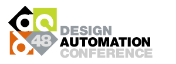

June 6 - June 7, 2011
3rd International Workshop on Bio-Design Automation
About IWBDA
The Third International Workshop on Bio-Design Automation (IWBDA) at DAC will bring together researchers from the synthetic biology, systems biology, and design automation communities. The focus is on concepts, methodologies and software tools for the computational analysis of biological systems and the synthesis of biological systems.
Still in its early stages, the field of synthetic biology has been driven by experimental expertise; much of its success can be attributed to the skill of the researchers in specific domains of biology. There has been a concerted effort to assemble repositories of standardized components. However, creating and integrating synthetic components remains an ad hoc process. The field has now reached a stage where it calls for computer-aided design tools. The electronic design automation (EDA) community has unique expertise to contribute to this endeavor. This workshop offers a forum for cross-disciplinary discussion, with the aim of seeding collaboration between the research communities.
Topics of interest include:
- Design methodologies for synthetic biology.
- Standardization of biological components.
- Automated assembly techniques.
- Computer-aided modeling and abstraction techniques.
- Engineering methods inspired by biology.
- Domain specific languages for synthetic biology.
- Data exchange standards and models for synthetic biology.
Venue
IWBDA will take place at:
San Diego Convention Center
San Diego, CA.

The workshop is part of the 48th ACM/EDAC/IEEE Design Automation Conference (DAC), the premier conference in the field of electronic design automation with over 10,000 attendees. This year DAC will be held June 5-10, 2011 at the San Diego Convention Center, San Diego, CA.
Sponsors
Abstract Submission
Abstracts should be two pages long, following the ACM SIG Proceedings templates at http://www.acm.org/sigs/publications/proceedings-templates Indicate whether you would like your abstract considered for a poster presentation, an oral presentation, or both. Include the full names, affiliations and contact information of all authors.
Abstracts will be reviewed by the Program Committee. Those that are selected for oral and poster presentations will be distributed to workshop participants and posted on the workshop website.
Abstracts should be submitted by April 19th, 2011 through the EasyChair system.
Registration, Travel, and Hotel Information
Registration is through the DAC website. Registration for DAC 2011 will be available April 1, 2011. See: DAC Registration.
Please note that the registration deadline for the dinner is May 14th. Registration rates are found here. Also, see travel and hotel information on the DAC website.
Dinner is limited to those that register by 5/18/11. Additional dinner spots may become available but are not guaranteed. For questions or concerns related to this policy please mail info@biodesignautomation.org
Student Support
If you are a student planning on attending the workshop this year, support funds may be available. Please send the following to finances@biodesignautomation.org by April 15th:
- Your name
- Affiliation
- Year in school (if appropriate)
- 50-100 word statement detailing why you seek support and how you plan to participate in the workshop (oral presentation, poster, etc).
Requests for support will be evaluated according to the following criteria (in order of importance):
- Quality of abstract/contribution submitted
- Year in school
- Expected travel expenses
Call for Abstracts
The call for abstracts are posted here in pdf and text. Feel free to distribute!


Survey
Please fill out the following survey:
Proceedings
The conference proceedings are available. Feel free to distribute!:
Monday:

Tuesday:

Key Dates
Call for participation published: January 24th, 2011
Abstract submission deadline: April 19, 2011
Abstract acceptance notification: May 1, 2011
Workshop: June 6 & 7, 2011
Proceedings & Journal Publications
If you wish to submit your research to the PLoS ONE IWBDA 2011 Collection, please consider the following when preparing your manuscript:
- All articles must adhere to the PLoS ONE submission guidelines.
- Standard PLoS ONE policies and publication fees apply to all submissions.
- In order to submit a paper for review as part of the collection, you must submit your paper to the PLoS ONE online journal management system, which can be found at: http://www.editorialmanager.com/pone.
- IMPORTANT: Upon submission, you will be asked whether your submission is intended for one of our upcoming collections; please enter “IWBDA 2011” in the field provided and this will ensure the PLoS ONE editorial staff are aware of your submission to the collection. Please also email publication@biodesignautomation.org to ensure that the IWBDA organizers are aware of your submission as well.
- The deadline for submitting to the IWBDA 2011 Collection is August 1st 2011 (extensions may be granted upon request to publication@biodesignautomation.org).
- Please note that submission to PLoS ONE as part of the IWBDA 2011 Collection does not guarantee publication or inclusion into the final collection.
- Please contact the PLoS ONE Editorial Manager, Lindsay King (lking@plos.org) if you would like further information about how to submit your research to the PLoS ONE IWBDA 2011 Collection.
Organizing Committee
- General Chair - Douglas Densmore (Boston University)
- General Secretary - Leonidas Bleris (UT Dallas)
- Program Committee Chairs - Xiling Shen (Cornell) and Smita Krishnaswamy (Columbia)
- Publication Chair - Jacob Beal (BBN Technologies)
- Industry Liaison Chair - Jonathan Babb (MIT)
- Finance Chair - Natasa Miskov-Zivanov (University of Pittsburgh)
- Soha Hassoun (Tufts University)
- Marc Riedel (University of Minnesota)
- Ron Weiss (MIT)
- J. Christopher Anderson, UC Berkeley
- Adam Arkin, UC Berkeley
- Jonathan Babb, MIT
- Jacob Beal, BBN Technologies
- Leonidas Bleris, UT Dallas
- Kevin Clancy, Life Technologies
- Douglas Densmore, Boston University
- Drew Endy, Stanford University
- Abishek Garg, Harvard University
- Soha Hassoun, Tufts University
- Mark Horowitz, Stanford University
- Alfonso Jaramillo, Ecole Polytechnique
- Yannis Kaznessis, University of Minnesota
- Eric Klavins, University of Washington
- Heinz Koeppl, ETHZ
- Tanja Kortemme, UCSF
- Smita Krishnaswamy, Columbia
- Vishwesh Kulkarni, Strand
- Natasa Miskov-Zivanov, Univ. of Pittsburgh
- Kartik Mohanram, Rice
- Chris Myers, University of Utah
- Jean Peccoud, Virginia Tech
- Andrew Phillips, Microsoft Research
- Marc Riedel, University of Minnesota
- Herbert Sauro, University of Washington
- Xiling Shen, Cornell
- David Thorsley, University of Washington
- Christopher Voigt, UCSF
- Ron Weiss, MIT
- Erik Winfree, Caltech
- Chris Winstead, Utah State University
Executive Committee
Steering Committee
Program Committee
Agenda
Monday – June 6th- 9am - 10am:
- Opening Remarks: Douglas Densmore (General Chair).
- Tutorial Session: Ron Weiss, Circuit engineering principles for synthetic biology
- 10:30 - 12pm: Tech. Talks Session 1 - Gene Network Reconstruction
- 1BDA.1 Considerations for using integral feedback control to construct a perfectly adapting synthetic gene network
- Jordan Ang, Sangram Bagh, Brian P. Ingalls and David R. Mcmillen
- 1BDA.2 Validation of Gene Network Models with Noisy Experimental Measurements using the Kalman Filter
- Yong-Jun Shin and Xiling Shen
- 1BDA.3 A Coherent Feedforward Loop Robustly Regulating Asymmetric Cell Fate in Colon Cancer Stem Cells
- Pengcheng Bu, Yong-Jun Shin and Xiling Shen
- 1BDA.1 Considerations for using integral feedback control to construct a perfectly adapting synthetic gene network
- 12pm- 2pm: Lunch and Poster Session
- 2:00pm - 4:00pm: Tech. Talks Session 2 - CAD Tools for Synthetic Biology
- 2BDA.1 GenoCAD 2.0: Thinking Inside the Box
- Mandy Wilson, Laura Adam and Jean Peccoud.
- 2BDA.2 TASBE: A Tool-Chain to Accelerate Synthetic Biological Engineering
- Jacob Beal, Ron Weiss, Douglas Densmore, Aaron Adler, Jonathan Babb, Swapnil Bhatia, Noah Davidsohn, Traci Haddock, Fusun Yaman, Richard Schantz and Joseph Loyall
- 2BDA.3 Toward Automated Selection of Parts for Genetic Regulatory Networks
- Fusun Yaman, Swapnil Bhatia, Aaron Adler, Douglas Densmore, Jacob Beal, Ron Weiss and Noah Davidsohn
- 2BDA.4 A Software Stack for Specification and Robotic Execution of Protocols for Synthetic Biological Engineering
- Viktor Vasilev, Chenkai Liu, Traci Haddock, Swapnil Bhatia, Aaron Adler, Fusun Yaman, Jacob Beal, Jonathan Babb, Ron Weiss and Douglas Densmore
- 2BDA.1 GenoCAD 2.0: Thinking Inside the Box
- 4:30pm - 6:00pm: Tech. Talks Session 3 - Biological Circuit Design
- 3BDA.1 Programmed DNA Computing Circuits as Cell-Mimicking systems for Nanomedical Applications
- Johann Elbaz, Fuan Wang and Itamar Willner
- 3BDA.2 Automated Sequence Design for Nucleic Acid Circuits and Nanostructures using Structural Annotations
- Benjamin Braun, Xi Chen and Andrew Ellington
- 3BDA.3 Robust Design of Genetic Circuits through Population Wide Error Detection and Correction
- Cristian Grecu, Jonathan Babb and Ron Weiss
- 3BDA.1 Programmed DNA Computing Circuits as Cell-Mimicking systems for Nanomedical Applications
- 7:00pm - 10:00pm: Dinner at Edgewater Grill
Address: 861 West Harbor Drive, San Diego, CA 92101. Phone: (619) 232-7581
Dinner currently is limited to those who registered by 5/18. If you have questions related to this please speak with Douglas Densmore
Tuesday – June 7th- 8:30am - 10:15am: General DAC Keynote
- 10:30am - 12:00pm: Tech. Talks Session 4 - Biological Circuit Simulators
- 4BDA.1 Biological Network Emulation in FPGA
- Natasa Miskov-Zivanov, Andrew Bresticker, Deepa Krishnaswamy, Sreesan Venkatakrishnan, Diana Marculescu and James Faeder
- 4BDA.2 Modeling and Visualization of Genetic Circuits
- Tyler Patterson, Nicholas Roehner, Curtis Madsen and Chris Myers
- 4BDA.3 Asynchronous Sequential Computation with Molecular Reactions
- Hua Jiang, Marc Riedel and Keshab Parhi
- 4BDA.1 Biological Network Emulation in FPGA
- 12pm- 2pm: Lunch and Poster Session
- 2:00pm - 3:00pm: Joint IWBDA/DAC Session
- Scalable Parts Families, Context, and Computational Design for Gene Expression Engineering
- Adam Arkin
- Gene and Cellular Circuit Design
- Chris Voigt
- A Verifying Compiler for DNA Chemical Reaction Networks
- Erik Winfree
- Scalable Parts Families, Context, and Computational Design for Gene Expression Engineering
- 4:00pm - 5:00pm: Tech Talks Session 5 - Parts and Standardization
- 5BDA.1 Evolution of SBOL- design information exchange standard
- Michal Galdzicki, Cesar A. Rodriguez, Laura Adam, J. Christopher Anderson, Deepak Chandran, Douglas Densmore, Drew Endy, John H. Gennari, Raik Gruenberg, Timothy Ham, Matthew Lux, Akshay Maheshwari, Barry Moore, Chris J. Myers, Jean Peccoud, Nicholas Roehner, Guy-Bart Stan, Mandy Wilson and Herbert M. Sauro
- 5BDA.2 Automated design of Synthetic Gene Circuits through Linear Approximation and Mixed Integer Optimization
- Linh Huynh, John Kececioglu and Ilias Tagkopoulos
- 5BDA.1 Evolution of SBOL- design information exchange standard
- 5:00pm - 6:00pm: Panel Session
- Steve Riedmuller (Hudson Robotics)
- Aaron Adler (BBN)
- Kevin Clancy (Life Technologies)
- Barry Canton (Ginkgo BioWorks)
- 6:00pm - 6:30pm: Closing remarks and post-workshop future planning
Posters
- Low-Power Broadcast Electrode-Addressing for Disposable Digital Microfluidic Biochips
- Tsung Wei Huang and Tsung-Yi Ho.
- Using user-defined semantic languages in synthetic biology: generating DNA compilers
- Laura Adam and Jean Peccoud.
- Integration of Standardized Cloning Methodologies and Sequence Handling to Support Synthetic Biology Studies
- Maurice H T Ling, Dunqiang Liao, Angela Jean, Beng B Y Tew, Shanice Ho and Kevin P Clancy.
- Network Reconstruction Using Literature Curated and High Throughput Data
- Vishwesh Kulkarni, Kalyanasundaram Subramanian, Reza Arastoo, Mayuresh Kothare and Marc Riedel.
- ShReDing Biochemical Networks to Uncover Hierarchical Modularity
- Gautham Sridharan, Kyongbum Lee and Soha Hassoun.
- Pareto Optimal Fronts in Bacterial Knockout Strategies
- Jole Costanza, Luca Zammataro, Pietro Liò and Giuseppe Nicosia.
- Optimal Design of the Mitochondrial Bioenergetics
- Jole Costanza, Luca Zammataro, Pietro Liò and Giuseppe Nicosia.
- OREMPDB, A Semantic Dictionary Of Runnable Biological Circuits; System Overview and First Queries in the Neurology Field
- Renato Umeton, Raffaella Pizzolato and Giuseppe Nicosia.
- Stochastic Resonance Optimization of a Genetic Quorum-Mediated Trigger Circuit
- Eduardo Monzon, Chris Winstead, Abiezer Tejeda and Charles Miller.
- Applying Hardware Description Languages to Genetic Circuit Design
- Roza Ghamari, Brynne Stanton, Traci Haddock, Swapnil Bhatia, Kevin Clancy, Todd Peterson, Christopher Voigt and Douglas Densmore.
- Design, Implementation, and Deployment of Electronic Datasheets
- Cesar Rodriguez and Michal Galdzicki.
Mailing List
To add yourself to the IWBDA mailing list, please send an email to listserv@lists.umn.edu with a blank subject line, consisting of a single line of text: SUBSCRIBE IWBDA-list Joe Nobody (where Joe Nobody is your name).
This is a moderated list: only postings approved by the owners will be distributed. Only material directly related to IWBDA will be sent.
Contact
- General Information: info@biodesignautomation.org
- Program: program@biodesignautomation.org
- Publication: publication@biodesignautomation.org
- Industry Liaison: industry@biodesignautomation.org
- Finances: finances@biodesignautomation.org
Related Venues & Meetings
Synthetic Biology 5.0 will be June 15th-19th at Stanford University. More information can be found here: http://www.biobricks.org/mailman/listinfo/sb5
IEEE Design and Test Special Section on "Bio-Design Automation in Synthetic Biology". CFP found here: http://www.computer.org/portal/web/computingnow/dtcfp3
Other Related Meetings- Critical Assessment of Genetically Engineered Networks
- SynBioCCC
- FutureLabCamp
- Hacteria
- International Bio-Molecular Design Competition
- International Symposium on Nanoscale Architectures (NANOARCH 2010)
- International Workshop on Logic and Synthesis (IWLS 2010)
Past Years
- 2nd International Workshop on Bio-Design Automation (IWBDA 2010): Anaheim, CA, June 14-15, 2010
- 1st International Workshop on Bio-Design Automation (IWBDA 2009): Moscone Center, San Francisco, CA, July 27, 2009
Miscellaneous
- Iowa Wholesale Beer Distributors Association (the other IWBDA!)